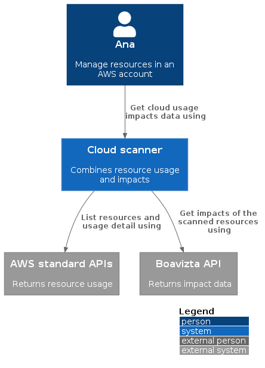

About cloud-scanner üì°
Boavizta Cloud-scanner returns environmental impacts of your AWS Instances (EC2) usage.
It combines real time inventory and usage data from your AWS account with Boavizta API to offer a view of your impacts on a given region.
- multi criteria: Primary Energy consumption (PE), Abiotic resource depletion potential (ADP), and Global Warming Potential (GWP)
- multi stage: separate impacts of ressources Usage and Manufacture
Estimations can be filtered by tags. It eases attribution to a specific server, environment, application or service.
Cloud-scanner can be used:
- from command line, to get an immediate view of your impacts üíª
- as a metric server . You can use it to monitor and display real time impacts in a dashboard üìä
Cloud-scanner is an Open Source application maintained here: https://github.com/Boavizta/cloud-scanner.
How it works

⚠ Alpha version
Cloud scanner is stable, but with limited functionality.
This is work in progress, and development versions (dev branch of the repository) may already implement new functionalities. So have a look at the changelog and Issues · Boavizta/cloud-scanner on this repository.
Quick start run CLI using docker üê≥
No installation needed, you will run a public docker image of cloud-scanner CLI.
Pre-requisites
- Docker.
- A working AWS account (and your AWS CLI profile already configured)
Run cloud-scanner cli
docker pull ghcr.io/boavizta/cloud-scanner-cli:latest
docker run -it ghcr.io/boavizta/cloud-scanner-cli:latest --help
# Ensure you have a working AWS profile setup locally (like you would do for AWS CLI)
# Note
# - we map local credentials on the container (-v)
# - we force a using 'myprofile' profile by setting the AWS_PROFILE environment variable with -e flag
# - the -it flag is optional, only purpose is to get colored output if any
# Just list instances
docker run -it -v $HOME/.aws/credentials:/root/.aws/credentials:ro -e AWS_PROFILE='myprofile' ghcr.io/boavizta/cloud-scanner-cli:latest inventory
# List instances and standard impacts (for 10 hours of use)
docker run -it -v $HOME/.aws/credentials:/root/.aws/credentials:ro -e AWS_PROFILE='myprofile' ghcr.io/boavizta/cloud-scanner-cli:latest estimate --hours-use-time 10
# Serve metrics
``` sh
# Note that we need to provide ca certificates and bind listen address to 0.0.0.0.
docker run -it -p 8000:8000 -v /etc/ssl/certs/ca-certificates.crt:/etc/ssl/certs/ca-certificates.crt -v $HOME/.aws/credentials:/root/.aws/credentials:ro -e ROCKET_ADDRESS=0.0.0.0 -e ROCKET_PORT=8000 -e AWS_PROFILE='myprofile' ghcr.io/boavizta/cloud-scanner-cli:latest serve
⚠ This method of passing credentials is not secure nor very practical. In a production setup on AWS, you should rather rely on the role of the instance that execute the container to manage authentication of the cli.
⚠ Running metric server in container require setting extra variables:
- to map AWS credentials
- to map SSL ca certificates
- and more importantly to configure Rocket to listen to 0.0.0.0 instead of default 127.0.0.1 (which is internal to the container. This is done with the extra variable:
ROCKET_ADDRESS=0.0.0.0
Alternatively you may build and use a local docker image, See build a local docker image
Quick start : display dashboard using docker-compose üê≥
No installation needed, you will run a public docker image of cloud-scanner CLI and Boavizta API.
All data remain local (this docker-compose stack uses a private instance of Boavizta API).
Pre-requisites
- Docker and docker-compose
- A working AWS account (and your AWS CLI profile already configured)
Run the demo dashboard
# Map your AWS credentials
export AWS_PROFILE=name-of-your-profile
# Start the stack (from the root of the repository)
docker-compose up
- Demo dashboard is exposed on http://localhost:3001
- Log in with user admin/admin
- Select the dashboard in the left menu.
Additional info
- ⚠ This docker-compose example is not intended for production deployment, but rather for quick testing.
- ports of all services are exposed.
- Grafana is served on http with default login.
- You may have to update the line mapping your AWS profile (Replace
AWS_PROFILE=${AWS_PROFILE}byAWS_PROFILE=the-real-name-of-your-profile). - In corporate environments, you may need to provide your certificates authorities certificates (
ca-certificates) to the cloud-scanner container (uncomment the mapping line in the docker-compose file). - For the demo, we deliberately set a short metrics scrapping interval (30 seconds in this demo). In production deloymnent, you may want to increase this metric scraping interval in the prometheus configuration file.
Quick start - Run CLI using Cargo ü¶Ä
This quick start will show the impacts of your EC2 instances for 10 hours of use, by building a local version of the cloud-scanner CLI from source.
Prerequisites
- a Rust toolchain installed locally rustup.rs - The Rust toolchain installer
- A working AWS account (and you AWS CLI profile already configured)
- optional: jq to format json results
Compile an run CLI üíª
- Clone the cloud-scanner repository
- build and run CLI
# Ensure you have a working AWS profile setup locally (like you would do for AWS CLI)
export AWS_PROFILE='<YOUR_PROFILE_NAME>'
# Get impacts of 10 hours of use (on your default account region)
cargo run estimate --hours-use-time 10 | jq
# Same thing but as metrics
cargo run -- --as-metrics estimate --hours-use-time 10
# Same query for explicit region
cargo run -- --aws-region eu-west-3 estimate --hours-use-time 10 | jq
Use cloud-scanner as a serverless application⚡
This will deploy the cloud-scanner inside your AWS account. You can use it to:
- scan the account to get json impacts (as you would do with the CLI)
- or
- get metrics (that you can scrape with prometheus or the monitoring system of your choice)
The application is build and deployed using the serverless framework (see serverless-design).
Prerequisites
The deployment creates an aws role configured to get sufficient permission to scan your resources without requesting end-user authentication.
- Nodejs installed locally
- An AWS account/profile with sufficient permissions to deploy lambda, configure API gateway, and create a role.
⚠ The deployment process was only tested on Linux.
Deploy the application ⚡
# Install node the serverless framework and it's dependencies
npm i
export aws_profile = <my profile>
# Deploy the application to your AWS account
serverless deploy
Usage
Scan the account / region üíª
This returns results in json format (see below, same as CLI)
https://xxxxx.execute-api.eu-west-1.amazonaws.com/dev/scan?hours_use_time=5&aws_region=eu-west-1
Use hours_use_time and aws_region parameters in the query to pass the values to the lambda.
Get Metrics üìä
https://xxxxx.execute-api.eu-west-1.amazonaws.com/dev/metrics?aws_region=eu-central-1
Returns metrics for 1 hour of use in prometheus format.
The metrics represent the costs / impacts of one hour of use of the resources present in your account at the time of the query.
Use aws_region parameters in the query.
# HELP boavizta_number_of_instances_total Number of instances detected during the scan.
# TYPE boavizta_number_of_instances_total gauge
boavizta_number_of_instances_total{awsregion="eu-central-1",country="DEU"} 7
# HELP boavizta_number_of_instances_assessed Number of instances that were considered in the measure.
# TYPE boavizta_number_of_instances_assessed gauge
boavizta_number_of_instances_assessed{awsregion="eu-central-1",country="DEU"} 5
# HELP boavizta_duration_of_use_hours Number of instances detected during the scan.
# TYPE boavizta_duration_of_use_hours gauge
boavizta_duration_of_use_hours{awsregion="eu-central-1",country="DEU"} 1.0
# HELP boavizta_pe_manufacture_megajoules Power consumed for manufacture.
# TYPE boavizta_pe_manufacture_megajoules gauge
boavizta_pe_manufacture_megajoules{awsregion="eu-central-1",country="DEU"} 1760.0
# HELP boavizta_pe_use_megajoules Power consumed during usage.
# TYPE boavizta_pe_use_megajoules gauge
boavizta_pe_use_megajoules{awsregion="eu-central-1",country="DEU"} 0.86
# EOF
Building cloud-scanner CLI with Cargo ü¶Ä
On Linux
Install Rust and linux-musl dependencies.
# Install rust (see https://www.rust-lang.org/tools/install), validate when prompted
curl --proto '=https' --tlsv1.2 -sSf https://sh.rustup.rs | sh
source "$HOME/.cargo/env"
# Add Linux musl target (needed for cross compilation for aws lambda)
rustup target add x86_64-unknown-linux-musl
sudo apt update && sudo apt install -y musl-tools musl-dev
# Test a build
cargo build
# build a release
cargo build --release
On Windows with WSL2
Tested method to build Rust on Windows is to use Windows Subsystem For Linux (WSL2)
- Prerequisite: install WSL2 and the latest Ubuntu LTS image (22.04). If you do not WSL yet, you may inspire from Set up Node.js on WSL 2.
- After WSL is setup, follow Linux instructions above inside the Linux VM.
Using docker
See Build a local docker image
Usage with Docker üê≥
Build a local docker image
# Local build of docker image
docker build . --tag cloud-scanner-cli
# Test run
docker run -it cloud-scanner-cli --help
Run cloud-scanner as a docker image
Deploy cloud scanner as a serverless application
You can deploy cloud scanner as a serverless application (AWS lambda).
The application is build and deployed using the serverless framework (see serverless-design).
Using Linux
- Install Rust
- Install nvm, nodejs
- test serverless package
Install Rust
# Install rust (see https://www.rust-lang.org/tools/install), validate when prompted
curl --proto '=https' --tlsv1.2 -sSf https://sh.rustup.rs | sh
source "$HOME/.cargo/env"
# Add Linux musl target (needed for cross compilation for lambda)
rustup target add x86_64-unknown-linux-musl
sudo apt update && sudo apt install -y musl-tools musl-dev
# Test a build
cargo build
Install node (for serverless deployment)
nvm, node.js and npm
See https://docs.microsoft.com/en-us/windows/dev-environment/javascript/nodejs-on-wsl
sudo apt-get install curl
# Install nvm
curl -o- https://raw.githubusercontent.com/nvm-sh/nvm/v0.39.1/install.sh | bash
# Install node
nvm install --lts
Install serverless framework and deps
npm install -g serverless
npm i
# Test packaging
serverless package
# deploy
serverless deploy
Using Windows
Tested method to deploy this serverless app from on windows is to use Windows Subsystem For Linux (WSL2).
- Prerequisite: install WSL2 and the latest Ubuntu LTS image (22.04). If you do not have it yet, you may inspire from Set up Node.js on WSL 2.
- After WSL is setup, follow Linux instructions above inside the Linux VM.
AWS authentication
Easiest way to pass aws credential is use an environment variable to use a specific aws profile.
Pre-requisite: AWS CLI installed and configured: Installing or updating the latest version of the AWS CLI - AWS Command Line Interface
# cloud-scanner CLI uses the AWS_PROFILE set in the environment variable.
export AWS_PROFILE='<YOUR_PROFILE_NAME>'
Integrate metrics to a monitoring dashboard
Cloud-scanner can be used to export metrics related to the impact of your cloud account.
The metrics are exposed in Prometheus/OpenMetrics format. You can use it to feed a monitoring dashboard and keep an eye on the evolution of impacts of your usage.
Overview
- Start cloud-scanner in metrics mode (using the
--serveoption or by deploying it as a serverless application). - Setup Prometheus to scrape the metrics
- Configure a dashboard to display the results.
Detailed steps
You can refer to the provided docker compose example for a quick start.
Prometheus and Grafana config files are in the dashboard-config directory.
For production use:
- It is easier (and safer) to deploy cloud-scanner as a serverless application. See Deploy cloud scanner as a serverless application.
- In production environment, you may want to increase the metrics scraping interval (30 seconds in this demo) in the prometheus configuration file.
Filter by tags
You can limit cloud-scanner results (metriccs or json) to the cloud resources that match specific tags.
You can use multiple tags.
Works with inventory or estimates.
Filter in cli
# Retrieve only resources with the following tags:
# CustomTagNameForDebug=olivierdemeringoadm
# and
# Name=test-boavizta
cargo run -- -t Name=test-boavizta-2 -t CreatorName=olivierdemeringoadm inventory| jq
Filter (with serverless/lambda)
Use one (or multiple) filter_tag parameter in the query string to restrict results.
# Retrieve only resources with the following tags:
# CustomTagNameForDebug=olivierdemeringoadm
# and
# Name=test-boavizta
https://<EDITED>.execute-api.eu-west-1.amazonaws.com/dev/scan?hours_use_time=5&aws_region=eu-west-1&filter_tag=CustomTagNameForDebug=olivierdemeringoadm&filter_tag=Name=test-boavizta
Filter metrics
Use the filter_tag query parameter in the URL.
It can be used multiple time (only instances matching all tags will be returned).
Example queries
- http://localhost:8000/metrics?aws_region=eu-west-3&filter_tag=Name=boatest&filter_tag=OtherTag=other-value
- http://localhost:8000/metrics?aws_region=eu-west-3&filter_tag=Name=boatest
- http://localhost:8000/metrics?aws_region=eu-west-1&filter_tag=Name=test-boavizta
Important limitation
Suppose the following instances (and tags)
-
instance1 (
- ENV=prod
- PURPOSE=CI
-
instance2
- ENV=prod
- PURPOSE=service
-
Filtering on “ENV=prod” will return instance1 and instance2
-
Filtering on “ENV=prod” and PURPOSE=CI will return only instance2
-
No filter will return all instances
Using a private instance of Boavizta API
To avoid that the scanner sends your invnetory data to the public version of Boavizta API, It is recommended to deploy your own instance of Boavizta API.
This is also usefull if you want to pin the version of API you intend to use.
The Boavizta API can be deployed in several ways (docker, lambda a.s.o.). Refer to the API documentation: Deploy - Boavizta API documentation.
Once you have deployed your instance of API, use either the command line flags (CLI) or environment variable (docker, lambda) to configure the scanner to use your API instance.
Source of data
Impact data is retrieved from BOAVIZTA reference data API.
This is similar to what you can get from Datavizta, but with automated inventory.
- Current version of cloud-scanner uses API v0.2.x
How we process workload
Workload of instances are estimated using AWS cloudwatch CPU metrics summary.
Cloud scanner uses a sampling period of 15 minutes, but impacts metrics are returned as impacts equivalent to one hour of use.
This means that instance impacts metrics data returned can be understood as: impact for one hour of use (considering the CPU workload of 15 last minutes).
Why this default sampling period of 15 minutes ?
- It seems sufficient for our current monitoring needs (but maybe we can make it configurable in the future).
- It seems hard to go below 10 minutes (because default period of AWS instance metrics is 5 minutes. You need to activate
detailed monitoring(extra feature) for 1 minute granularity: List the available CloudWatch metrics for your instances - Amazon Elastic Compute Cloud).
CLI options
List aws instances and their environmental impact (from Boavizta API)
Usage: cloud-scanner-cli [OPTIONS] <COMMAND>
Commands:
estimate Get estimation of impacts for a given usage duration
inventory List instances and their average cpu load for the last 5 minutes (no impact data)
serve Serve metrics on http://localhost:3000/metrics
help Print this message or the help of the given subcommand(s)
Options:
-a, --aws-region <AWS_REGION>
AWS region (The default aws profile region is used if not provided)
-b, --boavizta-api-url <BOAVIZTA_API_URL>
Optional Boavizta API URL if you want to use your own instance (URL without the trailing slash, e.g. https://api.boavizta.org)
-t, --filter-tags <FILTER_TAGS>
Filter instances on tags (like tag-key-1=val_1 tag-key_2=val2)
-v, --verbosity...
Enable logging, use multiple `v`s to increase verbosity
-m, --as-metrics
Returns OpenMetrics (Prometheus) instead of json output
-h, --help
Print help information
-V, --version
Print version information
Environment variables
Output data
Cloud scanner CLI and serverless application return data as json or Open Metrics (Prometheus) format.
JSON output (the default)
Cloud scanner returns a json array of instances metadata.
⚠ Returns empty impacts when the instance type is not known in Boavizta database
[
{
"instance_id": "i-001dc0ebbf9cb25c0",
"instance_type": "t2.micro",
"usage_data": {
"hours_use_time": 5,
"usage_location": "IRL"
},
"impacts": {}
},
{
"instance_id": "i-004599844f7c24814",
"instance_type": "t2.small",
"usage_data": {
"hours_use_time": 5,
"usage_location": "IRL"
},
"impacts": {}
},
{
"instance_id": "i-075444d7293d8bd76",
"instance_type": "t2.micro",
"usage_data": {
"hours_use_time": 5,
"usage_location": "IRL"
},
"impacts": {}
},
{
"instance_id": "i-033df52f12f30ca66",
"instance_type": "m6g.xlarge",
"usage_data": {
"hours_use_time": 5,
"usage_location": "IRL"
},
"impacts": {
"adp": {
"manufacture": 0.0084,
"unit": "kgSbeq",
"use": 1.7e-9
},
"gwp": {
"manufacture": 87,
"unit": "kgCO2eq",
"use": 0.029
},
"pe": {
"manufacture": 1100,
"unit": "MJ",
"use": 0.82
}
}
}
]
OpenMetrics/Prometheus output
As CLI application, If using --as-metrics or -m option or the serve command, cloud-scanner returns consolidated results as OpenMetric/Prometheus format instead of json details.
This is also the default format of the serverless app metrics route.
When using the metric output format, you cannot see the individual impacts of each instance. Instead, impacts of all instances are added to provide a global figure.
cargo run -- --as-metrics standard -u 1
# HELP boavizta_number_of_instances_total Number of instances detected during the scan.
# TYPE boavizta_number_of_instances_total gauge
boavizta_number_of_instances_total{awsregion="eu-west-1",country="IRL"} 9
# HELP boavizta_number_of_instances_assessed Number of instances that were considered in the measure.
# TYPE boavizta_number_of_instances_assessed gauge
boavizta_number_of_instances_assessed{awsregion="eu-west-1",country="IRL"} 6
# HELP boavizta_duration_of_use_hours Number of instances detected during the scan.
# TYPE boavizta_duration_of_use_hours gauge
boavizta_duration_of_use_hours{awsregion="eu-west-1",country="IRL"} 1.0
# HELP boavizta_pe_manufacture_megajoules Power consumed for manufacture.
# TYPE boavizta_pe_manufacture_megajoules gauge
boavizta_pe_manufacture_megajoules{awsregion="eu-west-1",country="IRL"} 2060.0
# HELP boavizta_pe_use_megajoules Power consumed during usage.
# TYPE boavizta_pe_use_megajoules gauge
boavizta_pe_use_megajoules{awsregion="eu-west-1",country="IRL"} 0.228
# EOF
Serverless design
We use the serverless framework and the softprops/serverless-rust plugin to ease packaging and deployment as lambda.
The cloud-scanner-cli is wrapped into a set of lambdas functions exposed behind an AWS API gateway.
This is certainly not the only way to deploy the application. If you want more control, you could compile, package and deploy the application with Terraform or CDK, but this is not documented yet.
Serverless deployment
When deploying as serverless, you have to provide and configure Grafana and Prometheus seprately. This repository only wrapps the cloud-scanner in a lambda.
The recommended serveless deployment is the following.

The scanner is deployed as a lambda inside a first region of your account. It performs inventory of other regions.
- You may restrict to specifc regions by tuning the role of the lambda defined in
serverless.yml - You can (and should) also deploy Boaviztapi as a lambda or other in your account. This allow to perform scans and evaluate impacts without any inventory data leaking outside your account. Once you have deployed your own instance of BoaviztAPI, tune the
BOAVIZTA_API_URLin theserverless.ymlfile to ensure that cloud-scanner points to your private instance of API. See using private Boavizta API.
⚠ Open issue prevents Boavizta API deployment as Lambda (https://github.com/Boavizta/boaviztapi/issues/153). As a workaround we recommend deploying Boavizta API as a docker container (for example using AWS ECS) . You can still use cloud-scanner itself as serverless application deployed with Lambda.
Serverless routes
Instance impacts as JSON
The scan route returns individual instances metrics in json format (see below, same as CLI)
Use hours_use_time and aws_region parameters in the query
E.g.: https://xxxxx.execute-api.eu-west-1.amazonaws.com/dev/scan?hours_use_time=5&aws_region=eu-west-1
[
{
"instance_id": "i-03c8f84a6318a8186",
"instance_type": "a1.medium",
"usage_data": {
"hours_use_time": 5,
"time_workload": 0,
"usage_location": "IRL"
},
"impacts": {
"adp": {
"manufacture": 0.0063,
"unit": "kgSbeq",
"use": 8e-12
},
"gwp": {
"manufacture": 31,
"unit": "kgCO2eq",
"use": 0.0001
},
"pe": {
"manufacture": 430,
"unit": "MJ",
"use": 0.004
}
}
},
{
"instance_id": "i-033df52f12f30ca66",
"instance_type": "m6g.xlarge",
"usage_data": {
"hours_use_time": 5,
"time_workload": 0,
"usage_location": "IRL"
},
"impacts": {
"adp": {
"manufacture": 0.0083,
"unit": "kgSbeq",
"use": 8e-10
},
"gwp": {
"manufacture": 83,
"unit": "kgCO2eq",
"use": 0.01
},
"pe": {
"manufacture": 1100,
"unit": "MJ",
"use": 0.4
}
}
},
{
"instance_id": "i-0a3e6b8cdb50c49b8",
"instance_type": "c5n.xlarge",
"usage_data": {
"hours_use_time": 5,
"time_workload": 0,
"usage_location": "IRL"
},
"impacts": {
"adp": {
"manufacture": 0.0086,
"unit": "kgSbeq",
"use": 1e-9
},
"gwp": {
"manufacture": 64,
"unit": "kgCO2eq",
"use": 0.02
},
"pe": {
"manufacture": 840,
"unit": "MJ",
"use": 0.5
}
}
},
{
"instance_id": "i-003ea8da7bb9bfff9",
"instance_type": "m6g.xlarge",
"usage_data": {
"hours_use_time": 5,
"time_workload": 0,
"usage_location": "IRL"
},
"impacts": {
"adp": {
"manufacture": 0.0083,
"unit": "kgSbeq",
"use": 8e-10
},
"gwp": {
"manufacture": 83,
"unit": "kgCO2eq",
"use": 0.01
},
"pe": {
"manufacture": 1100,
"unit": "MJ",
"use": 0.4
}
}
}
]
Account impacts as metrics
The metrics route returns aggregated account metrics for one hour of use in Prometheus format.
Use aws_region parameters in the query.
E.g.: https://xxxxx.execute-api.eu-west-1.amazonaws.com/dev/metrics?aws_region=eu-central-1
# HELP boavizta_number_of_instances_total Number of instances detected during the scan.
# TYPE boavizta_number_of_instances_total gauge
boavizta_number_of_instances_total{awsregion="eu-central-1",country="DEU"} 7
# HELP boavizta_number_of_instances_assessed Number of instances that were considered in the measure.
# TYPE boavizta_number_of_instances_assessed gauge
boavizta_number_of_instances_assessed{awsregion="eu-central-1",country="DEU"} 5
# HELP boavizta_duration_of_use_hours Number of instances detected during the scan.
# TYPE boavizta_duration_of_use_hours gauge
boavizta_duration_of_use_hours{awsregion="eu-central-1",country="DEU"} 1.0
# HELP boavizta_pe_manufacture_megajoules Power consumed for manufacture.
# TYPE boavizta_pe_manufacture_megajoules gauge
boavizta_pe_manufacture_megajoules{awsregion="eu-central-1",country="DEU"} 1760.0
# HELP boavizta_pe_use_megajoules Power consumed during usage.
# TYPE boavizta_pe_use_megajoules gauge
boavizta_pe_use_megajoules{awsregion="eu-central-1",country="DEU"} 0.86
# EOF
See also Set up monitoring dashboard for an example of scrapping and displaying these metrics.
Limitations and perimeter
We do our best to offer accurate estimations of impacts. But these figures should still be considered with a grain of salt.
All models are wrong, but some are useful.
The Boavizta impact data result from a modelling effort. It is important to consider the Perimeter of the reources that cloud-scanner accounts for and the limits of the tool itself.
Perimeter / scope
Cloud scanner only estimates the impacts of your AWS EC2 instances.
Several significant aspects of the global impacts of cloud usage are excluded:
- only measure compute instances (EC2 VM’s)
- do not account for the surrounding cloud infrastructure (network, control plan)
- do not account for storage
- do not take into account the overcommit (mutualization) or overprovisionning that cloud provider may apply to provide the service.
- do not account managed services (like DB as a service or Containers as a service).
- do not account serverless (lambda) compute.
- supported regions (EU and US only for the time being)
- unsupported instance types returns zero for their impacts.
- we do not provide (yet) error margins https://github.com/Boavizta/boaviztapi/issues/147
- The manufacturing impacts are not amortized (i.e. values returned for manufacturing impacts do not consider usage duration).
Other limits
Not all Regions are supported
Only a subset of AWS regions are supported. When performing inventory, he only the EU-based or US-based aws regions are supported for the time being (eu-east-1,,eu-central-1,eu-north-1,eu-south-1,eu-west-1,eu-west-2,eu-west-3,us-east-1,us-east-2,us-west-1,us-west-2).
When a region is not recognized by Cloud-scanner, it defaults to using the Carbon intensty factor of France. This is particularly relevant when considering CoEq indicator because the carbon intensity factor varies greatly between regions.
Instances supported
Cloud scanner supports all instances types of Boavizta API. But when a specific instance type cannot be matched with the Boavizta data set, Cloud-scanner returns empty impacts (i.e. zeroed imapct values).
See also Issues · Boavizta/cloud-scanner.
Carbon intensity is not real time
Carbon intensity of electricity is not (yet) real time. It uses and yearly extract. This is more related to the API itself, see https://github.com/Boavizta/boaviztapi/issues/117 and general Boavizta API methodology.
Allocation of manufacture impacts
Today, cloud scanner returns the manufacture impacts of a resource corresponding to the entire lifecyle of the ressource. The manufacture impacts returned for a VM are the same if you use it one hours or several year. Said differently we do not amortize the manufacuring impacts over the duration of use.
We do not provide margins of error
Cloud scanner is not yet able to provide error margin related to it’s estimation. Note that there is ongoing work on Boavizta API to provide more details about the error margins: https://github.com/Boavizta/boaviztapi/issues/147
Testing
Whne launched with cargo test -- --include-ignored some the unit tests require a specific instance to run (when launched ).
These integration tests requiere specific instance to be up and running to pass. This means they are tied to a specific cloud account.
Commands to start or stop instances:
# List instance state
aws ec2 describe-instance-status --include-all-instances --filters Name=instance-state-name,Values='*' --query 'InstanceStatuses[*].{InstanceId: InstanceId, State: InstanceState.Name}' --ouptut table
# start instance
aws ec2 start-instances --instance-id i-03c8f84a6318a8186
# stop instance
aws ec2 stop-instances --instance-id i-03c8f84a6318a8186